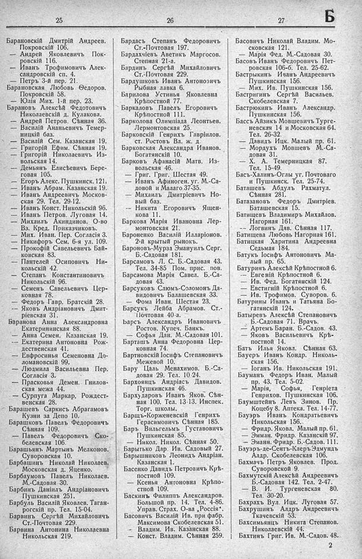

Лист источника 359
Скан

Распознанный текст
25
Барановскій Дмитрій Андреев.
Покровскій 106.
— Андрей Яковлевичъ Пок-
ровскій 116.
— Иванъ Трофимовичъ Алек-
сандровскій сп. 4.
— Петръ 3-й пер. 21.
Барановская Любовь Ѳедоров.
Покровскій 58.
— Юлія Мих. 1-й пер. 23.
Барановъ Алексѣй Федотовичъ
Николаевскій д. Кулакова.
— Андрей Петров. Сѣнная 36.
— Василій Ананьевичъ Темер-
ницкій баз.
— Василій Сем. Казанская 19.
— Григорій Ефим. Сѣнная 19.
— Григорій Николаевичъ Из-
вольская 14.
— Демьянъ Елисѣевичъ Бере-
говая 105.
— Егоръ Алекс. Пушкинск. 121.
— Иванъ Абрам. Казанская 19.
— Иванъ Андреевичъ Москов-
ская 29. Тел. 29-12.
— Иванъ Конст. Никольскій 96.
— Иванъ Петров. Луговая 14.
— Михаилъ Акиндинов. О-во
Вз. Кред. Приказчиковъ.
— Мих. Иван. Пер. Согласія 3.
— Никифоръ Сем. 6-я ул. 109.
— Прокофій Савельевичъ Бай-
ковская 83.
— Пантелей Осиповичъ Ни-
кольскій 42.
— Степанъ Константиновичъ
Никольскій 96.
— Семенъ Савельевичъ Цер-
ковная 78.
—— Федоръ Гавр. Братскій 28.
—— Яковъ Андріановичъ Дмит-
ріевская 31.
Баранова Анна Александровна
Екатерининская 88.
— Анна Семен. Казанская 19.
— Екатерина Антоновна Рож-
дественская 41.
— Евфросинья Семеновна До-
ломановскій 99.
— Людмила Васильевна Пер.
Согласія 3.
— Прасковья Демен. Гнилов-
ская межа 44.
— Сурпуга Маркар. Рождест-
венская 28.
Барашевъ Саркисъ Абрагамовъ
Кузни за Депо 10.
Барашковъ Павелъ Федоровичъ
Сѣнная 109.
— Павелъ Федоровичъ Ско-
белевская 106.
Барашьянъ Мартынъ Мелконов.
Суворовская 10.
Барбашинъ Николай Николаев.
Московская д. Яценко.
Барбаумовъ Павелъ Николаев.
М.-Садовая 30.
Барбинъ Даніилъ Андріановичъ
Пушкинская 251.
Барбуль Василій Яковлев. Таган-
рогскій пр. Тел. 15-04.
Барвинъ Сергѣй Михайловичъ
Ст.-Почтовая 229.
Барвина Антонина Николаевна
Никольская 219.
26
Бардасъ Степанъ Федоровичъ
Ст.-Почтовая 197.
Бардахчіевъ Аветикъ Маргосов.
Степная 21-а.
Бардинъ Сергѣй Михайловичъ
Ст.-Почтовая 229.
Бардушковъ Иванъ Антоновичъ
Рыбная лавка 6.
Барилова Устинья Яковлевна
Крѣпостной 77.
Баркаловъ Павелъ Егоровичъ
Крѣпостной 111.
Барколова Олимпіада Леонтьев.
Лермонтовская 25.
Барковскій Генрихъ Гавріилов.
ст. Ростовъ Вл. ж. д.
Барковская Александра Иванов.
Богатянскій 10.
Барковъ Афанасій Матв. Из-
вольская 46.
— Григ. Григ. Шестая 49.
— Иванъ Афиноген. уг. М.-Са-
довой и Малаго 37-35.
— Михаилъ Дмитріевичъ Но-
вый баз.
-- Никита Егоровичъ Ящен-
кова 11.
Баркова Марія Ивановна Лер-
монтовская 21.
Бароненко Василій Илларіонов.
2-й крытый рынокъ.
Бароновъ-Мурза Эмануилъ Серг.
Б.-Садовая 181.
Барсамовъ Л. С. Б.-Садовая 43.
Тел. 34-85 Пом. прис. пов.
Барсамова Марія Савел. Б.-Са-
довая 43.
Барсуковъ Сліомъ-Соломонъ Да-
видовичъ Балашевская 33.
— Фома Иван. Шестая 23.
Барсукъ Лейба Абрамов. Ст.-
Почтовая 40-а.
Барсъ Александръ Ивановичъ
Ростов. Купеч. Банкъ.
— Софья Дан. М.-Садовая 101.
Барташъ Анна Федоровна Цер-
ковная 74.
Бартновскій Іосифъ Степановичъ
Межевой 10.
Бару Цаль Менахимов. Б.-Са-
довая 29. Тел. 10-24.
Бархоянцъ Андріасъ Давидов.
Пушкинская 46.
Бархударовъ Иванъ Яков. Сѣн-
ная 100. Тел. 13-13. Инспек.
Торг. школы.
Барщъ-Корженевскій Генрихъ
Герасимовичъ Сѣнная 185.
Баръ Вильгельмъ Густавовичъ
Пушкинская 85.
— Никол. Никол. Сѣнная 50.
Барытько Дар. Ив. Садовый 27.
Барышниковъ Леонидъ Андріан.
Казанская 1.
Басенко Давидъ Петровичъ Крѣ-
постной 109.
— Ксенья Антоновна Крѣпо-
стной 109.
Баскинъ Филиппъ Александров.
Большой пр. 14. Тел. 4-86.
Управ. Страх. О-ва „Россія“.
Басовичъ Василій Ив. при фабр.
Максимова Скобелевская 51.
— Владим. Ив. Казанская 88.
— Конст. Владим. Сѣнная 259.
27
Б
Басовичъ Николай Владим. Мо-
сковская 121.
— Марія Фед. М.-Садовая 30.
Басовъ Иванъ Федоровичъ Пет-
ровская 106-б. Тел. 25-62.
Бастрыкинъ Иванъ Андреевичъ
Пушкинская 156.
— Мих. Ив. Пушкинская 156.
Бастригинъ Сергѣй Васильев.
Скобелевская 7.
Бастрюкинъ Иванъ Александр.
Пушкинская 156.
Бассъ Айзикъ Мовшевичъ Турге-
невская 14 и Московская 64.
Тел. 26-32.
— Давидъ Ицк. Малый пр. 61.
— Мордухъ Мовшевъ М.-Са-
довая 31.
— Х. А. Темерницкая 87.
Тел. 15-49.
Басъ-Халинъ-Оглы уг. Почтоваго
и Пушкинск. Тел. 25-74.
Баташевъ Абдулъ Рахматул.
Сѣнная 281.
Батазановъ Федоръ Дмитріев.
Баташевская 15.
Батищевъ Владимиръ Михайлов.
Нагорная 161.
-- Логвинъ Дав. Сѣнная 117.
Батищева Любовь Нагорная 161.
Батицкая Харитина Андреевна
Седьмая 184.
Батукъ Іосифъ Антоновичъ Ма-
лый пр. 65.
Батуринъ Алексѣй Крѣпостной 6.
— Евгеній Крѣпостной 6.
— Ив. Фед. Богатянскій 124.
— Евстигній Крѣпостной 6.
— Ив. Трофимов. Суворов. 6.
Батурины Иванъ и Татьяна Бо-
гатянскій 124.
Батыревъ Алексѣй Степановичъ
Б.-Садовая 71. Врачъ.
— Артемъ Баран. Б.-Садов. 43.
— Яковъ Васильевичъ Крѣ-
постной 14.
Батъ Илья Яковл. Сѣнная 63.
Бауеръ Иванъ Кондр. Николь-
ская 156.
— Іоганъ Ив. Никольская 191.
Бауманъ Федоръ Иван. Малый
пр. 43. Тел. 5-02.
— Марія, Софья, Генріета
Генрихов. Пушкинская 106.
Баумштейнъ Левъ Зинов. Пр.
Коцебу 8. Аптека. Тел. 14-77.
Бауэръ Иванъ Кондратьевичъ
Никольская 156.
— Фридр. Яковл. Малый пр. 61.
— Эмман. Фридр. Казанскій 97.
— Эманн. Фридр. Б.-Садов. 111.
Бауэръ-де-Сентъ-Клеръ Эдмундъ
Алдр. Скобелевская 106.
Бахмачъ Петръ Яковлев. Прод.
Суворовской 9.
Бахмутскій Алексѣй Андреевичъ
Б.-Садовая 142. Тел. 2-47.
— В. И. Тургеневская 80.
Тел. 30-20.
Бахрахъ Вул. Ицк. Луговая 57.
Бахрушинъ Алдръ Андреевичъ
Ткачевскій 53.
Бахсимьянцъ Никита Степанов.
Николаевскій 44.
Бахтинъ Григ. Ив. М.-Садов. 48.
2